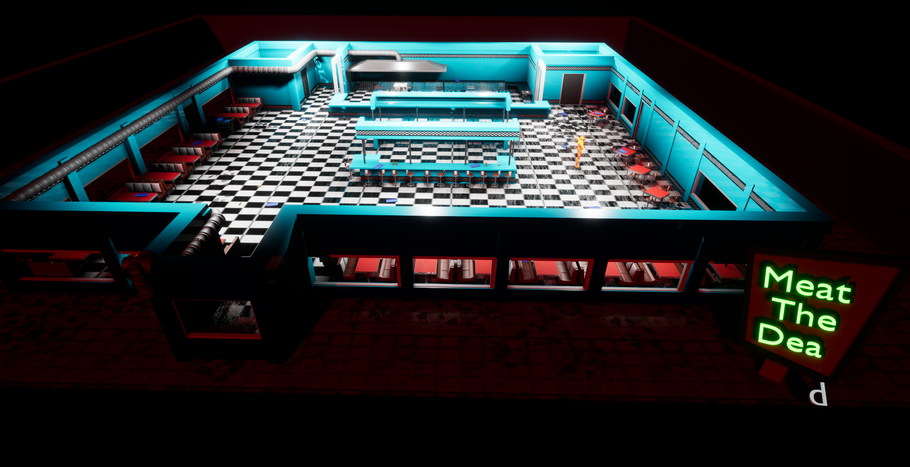
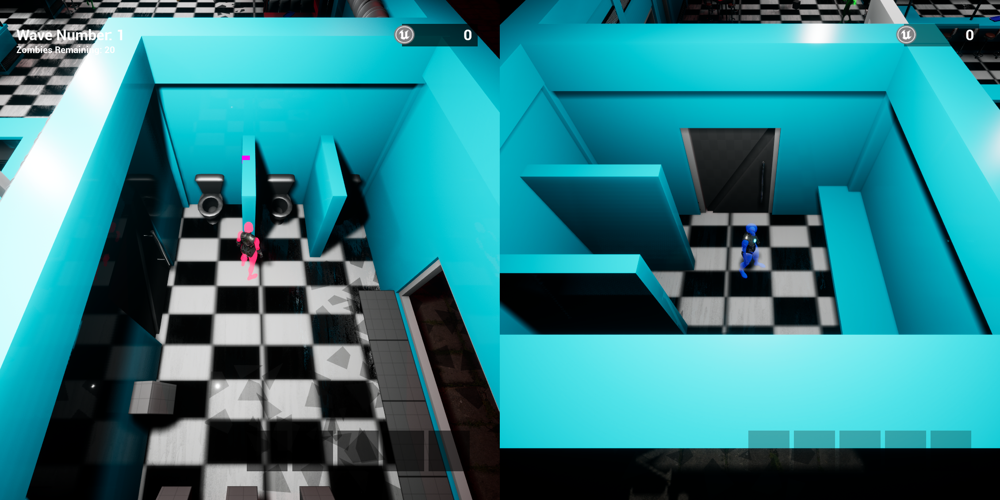
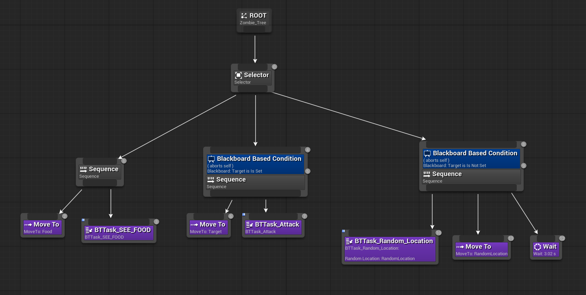
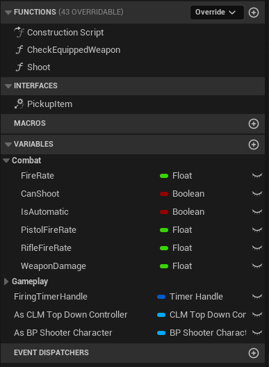

Meat The Dead
Meat The Dead is a top-down co-op wave-based survival game developed in Unreal Engine 5. Two players work together inside a zombie-infested restaurant, where one player cooks explosive bait food while the other shoots zombies. The game emphasizes cooperation, resource management, and role-specific mechanics in a frenetic survival experience.
This project showcases advanced multiplayer systems, AI implementation, and cooperative gameplay design patterns in Unreal Engine 5, built from scratch with a focus on local split-screen co-op functionality.

Project Overview
Traditional zombie survival games often focus on individual player progression or generic co-op where both players have identical roles. Meat The Dead explores asymmetric co-op design where each player has distinct, complementary responsibilities that force meaningful collaboration.
The Cook character prepares and throws food-based weapons that stun, explode, or decoy zombies. The Shooter uses limited ammunition to eliminate threats. Both roles are essential - the Shooter alone cannot survive the waves, and the Cook's abilities alone cannot defeat enemies. This creates interdependence that drives authentic cooperative gameplay.
Game Design and Roles
The Cook
The Cook is a support-focused character responsible for crowd control through food-based mechanics. Players collect ingredients dropped by zombies or found throughout the kitchen, then prepare bait-food at cooking stations. These explosive dishes can stun zombies, create chain explosions, or draw enemies away from the Shooter.
- Collects food ingredients dropped by defeated zombies or found in kitchen areas
- Prepares explosive bait-food with cooldown management and ingredient limits
- Can upgrade recipes to extend explosion radius, increase stun duration, or improve crowd control
- Must manage inventory space and recipe cooldowns strategically
The Shooter
The Shooter relies on precision and ammunition management to eliminate threats. With limited ammo, every shot counts. This forces players to focus fire on priority targets while trusting the Cook to manage crowd control. Upgrades improve damage, reload speed, and magazine capacity.
- Uses limited ammunition to eliminate zombies with precision shooting
- Each bullet counts - missing shots wastes precious resources and time
- Can upgrade weapon stats including damage, reload speed, and magazine capacity
- Must prioritize targets and coordinate with the Cook for optimal efficiency
Technical Implementation
Local Co-op and Split-Screen Architecture

Meat The Dead implements true local co-op with split-screen rendering, allowing two players to play on the same screen with independent camera views. This required custom implementation of Unreal's local player system and viewport handling.
- Custom implementation of split-screen using Unreal's local player system and multiple PlayerControllers
- Independent camera systems for each player with separate viewport handling
- Synchronized GameState managing wave logic, resource pools, and upgrade progression accessible to both players
- Per-player input mapping contexts ensuring each controller has independent action input
- Shared HUD that displays role-specific information (Cook: ingredients/cooldowns, Shooter: ammo/upgrades)
Zombie AI and Behavior System

Three distinct zombie types create tactical variety and escalating difficulty. Each type has unique behaviors, health pools, and movement speeds implemented through behavior trees and state machines.
- Normal Zombies: Balanced speed and health, attack both players equally
- Skinny Zombies: Faster movement speed but reduced health - require quick reactions
- Tanky Zombies: Slower but significantly more durable - demand sustained fire or group stuns
- Behavior tree implementation with state transitions (idle, chase, attack, stun, death)
- Feeding mechanic where zombies actively pursue cooked bait, dividing attention from players
- Distance-based AI ticking optimization to maintain performance with multiple active zombies
Shooting System and Weapon Mechanics

The Shooter's weapon system implements precise raycasting for instant hit detection combined with magazine management and reload mechanics. Ammunition is a valuable resource that encourages tactical decision-making.
- Raycast-based hit detection for responsive, instant feedback on shots
- Magazine-based ammunition system with limited ammo requiring careful resource management
- Reload mechanics with customizable reload speed influenced by upgrades
- Damage falloff and accuracy calculations based on distance and upgrade tier
- Ammo drop rate from defeated zombies scaled by wave difficulty
- HUD display showing current magazine, reserve ammo, and reload progress
Cooking and Resource Management

The Cook's mechanics center on ingredient collection, recipe preparation, and ability cooldown management. Resources drop randomly from defeated zombies, forcing players to make strategic decisions about ingredient usage and upgrades.
- Ingredient inventory system with limited carry capacity
- Recipe system with cooldown timers preventing ability spam
- Explosive effect logic for bait food - stun radius, explosion damage, and chain reaction mechanics
- Zombie feeding AI - zombies actively pursue and consume bait, becoming stunned on consumption
- Upgradeable recipes increasing explosion radius, stun duration, and ingredient efficiency
- Resource generation from wave completion and zombie defeats
Wave Progression and Difficulty Scaling

Waves escalate in difficulty every 5 waves by introducing new zombie types, increasing spawn rates, and adjusting enemy health pools. The GameMode controls spawning logic while the WaveSpawner handles placement and timing.
- Wave 1-4: Normal zombies only - establishing baseline difficulty
- Wave 5+: Introduces Skinny Zombies - faster, more chaotic combat
- Wave 10+: Introduces Tanky Zombies - demand sustained focus and strategic focus fire
- Scaling spawn rates increase zombie count per wave proportionally
- Resource drop rates adjusted per wave tier ensuring progression remains balanced
- Between-wave downtime allows players to spend currency on upgrades and manage inventory
Upgrade and Progression System

The Upgrade Machine serves as the central progression hub. Players spend currency earned from defeating zombies to improve their role-specific abilities. All upgrades persist across waves, creating meaningful progression arcs.
- Cook upgrades: Food intensity duration, explosion radius, ingredient efficiency
- Shooter upgrades: Weapon damage, reload speed, magazine capacity, ammo efficiency
- Shared upgrades: Health pool increases, movement speed, inventory capacity
- Currency drops from defeated zombies - every kill contributes to progression
- Upgrade tiers create visual and gameplay progression - each tier meaningfully changes ability feel
- UI clearly displays upgrade costs and current progression toward next tier
Architecture and Design Patterns
Asymmetric Multiplayer Design: Rather than giving both players identical abilities, each role has unique mechanics that create interdependence. The Cook cannot defeat enemies alone, and the Shooter cannot manage crowds effectively alone. This forces genuine cooperation rather than parallel play.
Resource Economy: Both ammunition and ingredients are finite resources that drop from enemies. This creates tension - players must choose between aggressive play (burning resources faster) and conservative play (stretching resources further). The economy self-balances through difficulty scaling.
Local Co-op Focus: In an era of online-only multiplayer, Meat The Dead emphasizes shared-screen co-op where both players see the same action. This creates spectating opportunities and allows for reactive communication - watching your partner's ammo counter or ingredient status directly informs your tactical decisions.
Learning Outcomes Achieved
Multiplayer Systems: Implementing local co-op taught me how to manage multiple PlayerControllers, synchronized game state, and independent input mapping. Split-screen viewport handling required understanding Unreal's rendering pipeline and camera systems.
AI Implementation: Building behavior trees for three distinct zombie types with state transitions demonstrated how scalable AI architecture supports variety while maintaining performance through optimization techniques.
Game Balance: Designing asymmetric roles required careful playtesting and iteration to ensure both the Cook and Shooter felt essential and powerful. Difficulty scaling through wave progression demanded data-driven tuning of spawn rates, enemy stats, and resource drops.
Systems Design: The upgrade machine, wave spawner, and resource economy represent interconnected systems that need to stay balanced. Small changes to ammo drop rates or upgrade costs cascade through the entire progression curve.